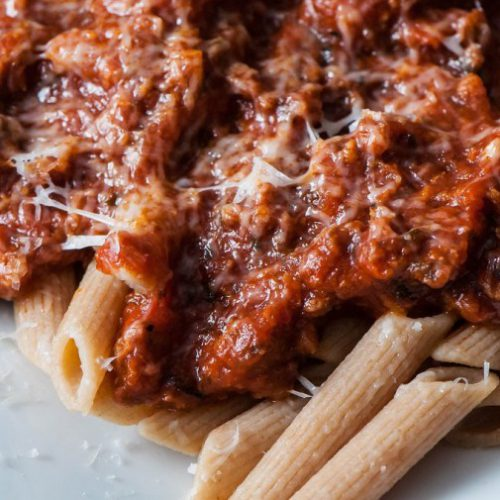

Sicilian Ragu

A simple and convenient sauce for your pasta!
Ragu is an Italian sauce made of ground beef, tomatoes, and vegetables.
While easy to make, the freshest ingredients are vital to bringing out the Sicilian flavours!
Ingredients
- Olive Oil
- Salt
- Ground Beef
- Crushed Tomatoes
- Peppers
- Onions
- Tomato Paste
Instructions
- In a saucepan, sautee the ground beef and onions in 1 tbsp of olive oil.
- Once the beef has browned, add a tsp of tomato paste.
- Add the crushed tomatoes and 1 cup of water, and simmer on low heat for 1 hour.
- Add in the peppers and season with SPG.